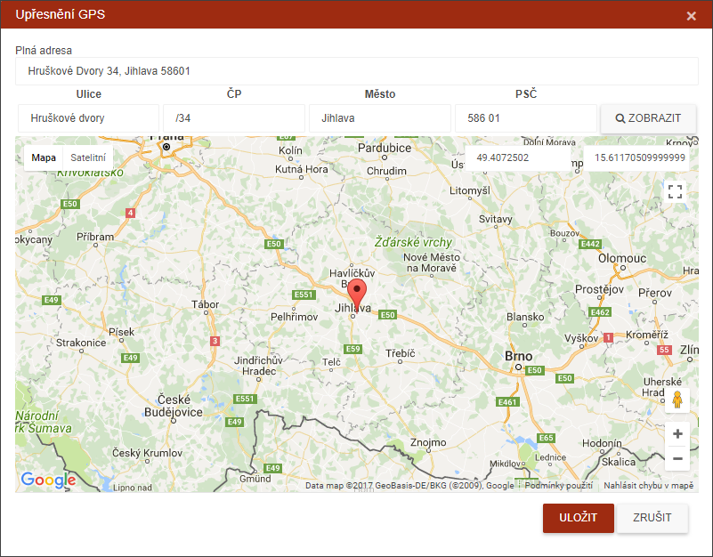
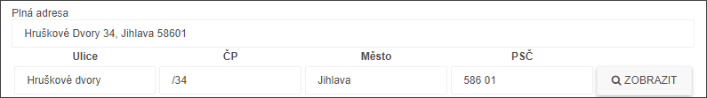
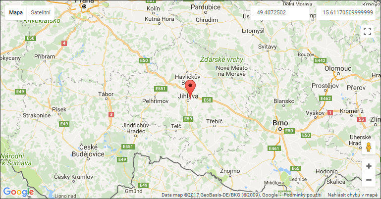

Ruční kontrola GPS
Pro ruční výběr adresy stačí kliknout na značku (červenou nebo zelenou) a otevře se následující dialog:

Dialog obsahuje dvě základní části :
- Místo pro opravu adresy - zde je uživateli předložena v první řádce nerozdělená původní adresa a ve druhé části je adresa rozdělena do logických celků (Ulice, Město ...). V případě, že je adresa rozdělena chybně, může zde uživatel provést ruční opravu a pomocí tlačítka "Zobrazit" je adresa překontrolována na mapě.

- Mapový podklad s vykreslenou značkou zacílených GPS souřadnic. Zde je kontrola pouze vizuální, nelze posouvat značkou po mapě.

Obrazovka mapy má několik ovládacích prvků, které umožňují uživateli pracovat s mapou. Popis těchto prvků je v záložce Ovládání mapy.